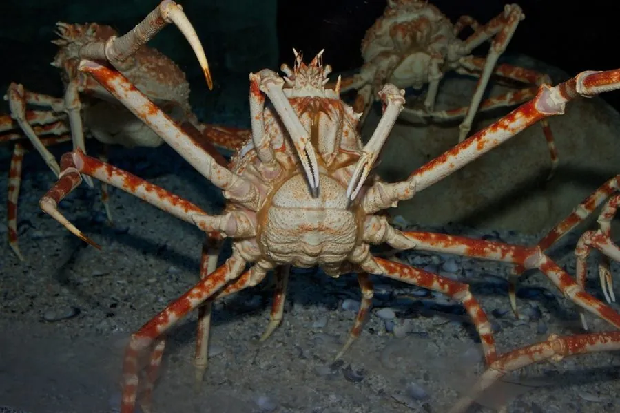

甲壳动物 · 动物界
巨螯蟹 Macrocheira kaempferi

世界上腿展最大的甲壳动物，腿展开可达 4 m，生活在日本附近的深海中，是著名的深海巨型蟹类。
- 分类
- 门节肢动物门纲软甲纲目十足目科巨螯蟹科属巨螯蟹属
- 栖息环境
- 日本附近太平洋沿岸水深 150–800 m 的深海泥沙底
- 地理分布
- 日本本州、九州附近的太平洋沿岸海域
- 保护级别
- 暂无评估；需加强种群监测
物种志
巨螯蟹腿展可达 4 m，是已知腿展最大的甲壳动物，也是体型最大的节肢动物之一；头胸甲相对较小，步足细长，螯足也很长，体色橙红，体表有瘤突和细毛。
它生活在日本本州、九州附近太平洋沿岸的深海，水深约 150–800 m，栖息在泥沙底，取食动物尸体、贝类和小型底栖动物，也会用长足在海底缓慢行走。巨螯蟹繁殖期会向浅水移动产卵，幼体浮游发育。由于生活在深海，对它的人工观察和养殖都很困难，主要依靠渔业捕捞和研究船调查。它是深海巨型化现象的著名例子，常被水族馆制成标本展示，受深海捕捞和海洋环境影响，需要加强种群监测。它是日本沿海渔民偶尔会捕获的深海蟹类。
形态与习性
- 食性取食动物尸体、贝类和小型底栖动物
- 腿展可达 4 m，是腿展最大的甲壳动物
- 栖息水深 150–800 m 的深海泥沙底
- 繁殖繁殖期向浅水移动产卵，幼体浮游发育
- 习性用长足在海底缓慢行走，取食腐肉
- 研究深海巨型化的著名例子
趣味知识
- 巨螯蟹的腿展开可达 4 米，是腿展最大的甲壳动物。
- 它生活在数百米深的深海里，平时很难见到活的个体。
- 水族馆里展示的巨螯蟹标本，往往比人的手臂展开还长。